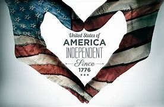
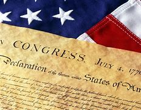
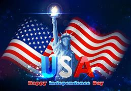

American indenpendence
  During the American Revolution, the legal separation of the thirteen colonies from Great Britain in 1776 actually occurred on July 2, when the Second Continental Congress voted to approve a resolution of independence that had been proposed in June by Richard Henry Lee of Virginia declaring the United States independent from Great Britain's rule. After voting for independence, Congress turned its attention to the Declaration of Independence, a statement explaining this decision, which had been prepared by a Committee of Five, with Thomas Jefferson as its principal author. While Jefferson consulted extensively with the other four members of the Committee of Five, he largely wrote the Declaration of Independence in isolation over 17 days between June 11, 1776, and June 28, 1776, from the second floor he was renting in a three-story private home at 700 Market Street in Philadelphia, now known as the Declaration House, and within walking distance of Independence Hall. Congress debated and revised the wording of the Declaration, removing Jefferson's vigorous denunciation of King George III for importing the slave trade, finally approving it two days later on July 4. A day earlier, John Adams wrote to his wife Abigail: The second day of July 1776, will be the most memorable epoch in the history of America. I am apt to believe that it will be celebrated by succeeding generations as the great anniversary festival. It ought to be commemorated as the day of deliverance, by solemn acts of devotion to God Almighty. It ought to be solemnized with pomp and parade, with shows, games, sports, guns, bells, bonfires, and illuminations, from one end of this continent to the other, from this time forward forever more. Adams's prediction was off by two days. From the outset, Americans celebrated independence on July 4, the date shown on the much-publicized Declaration of Independence, rather than on July 2, the date the resolution of independence was approved in a closed session of Congress. Historians have long disputed whether members of Congress signed the Declaration of Independence on July 4, even though Thomas Jefferson, John Adams, and Benjamin Franklin all later wrote that they had signed it on that day. Most historians have concluded that the Declaration was signed nearly a month after its adoption, on August 2, 1776, and not on July 4 as is commonly belie. By a remarkable coincidence, Thomas Jefferson and John Adams, the only two signatories of the Declaration of Independence later to serve as presidents of the United States, both died on the same day: July 4, 1826, which was the 50th anniversary of the Declaration. Although not a signatory of the Declaration of Independence, James Monroe, another Founding Father who was elected president, also died on July 4, 1831, making him the third President who died on the anniversary of independence. The only U.S. president to have been born on Independence Day was Calvin Coolidge, who was born on July 4, 1872.
short Information
| Day | Month | Year |
|---|---|---|
| 4 | July | 1776 |
| 25 | November | 1883 |
Independence Day is a national holiday marked by patriotic displays. Per 5 U.S.C. § 6103, Independence Day is a federal holiday, so all non-essential federal institutions (such as the postal service and federal courts) are closed on that day. While the legal holiday remains on July 4, if that date happens to be on a Saturday or Sunday, then federal government employees will instead take the day off on the adjacent Friday or Monday, respectively. Families often celebrate Independence Day by hosting or attending a picnic or barbecue; many take advantage of the day off and, in some years, a long weekend to gather with family members or friends. Decorations (e.g., streamers, balloons, and clothing) are generally colored red, white, and blue, the colors of the American flag. Parades are often held in the morning, before family get-togethers, while fireworks displays occur in the evening after dark at such places as parks, sporting venues, fairgrounds, public shorelines, or town squares. The night before the Fourth was once the focal point of celebrations, marked by raucous gatherings often incorporating bonfires as their centerpiece. In New England, towns competed to build towering pyramids, assembled from barrels and casks. They were lit at nightfall to usher in the celebration. The highest were in Salem, Massachusetts, with pyramids composed of as many as forty tiers of barrels. These made the tallest bonfires ever recorded. The custom flourished in the 19th and 20th centuries and is still practiced in some New England towns. Independence Day fireworks are often accompanied by patriotic songs, such as "The Star-Spangled Banner" (the American national anthem); "Columbia, the Gem of the Ocean"; "God Bless America"; "America the Beautiful"; "My Country, 'Tis of Thee"; "This Land Is Your Land"; "Stars and Stripes Forever"; "Yankee Doodle"; "Dixie" in southern states; "Lift Every Voice and Sing"; and occasionally, but has nominally fallen out of favor, Hail Columbia. Some of the lyrics recall images of the Revolutionary War or the War of 1812. Independence Day Parade in Washington, D.C. Firework shows are held in many states, and many fireworks are sold for personal use or as an alternative to a public show. Safety concerns have led some states to ban fireworks or limit the sizes and types allowed. In addition, local and regional conditions may dictate whether the sale or use of fireworks in an area will be allowed; for example, the global supply chain crisis following the COVID-19 pandemic forced cancellations of shows. Some local or regional firework sales are limited or prohibited because of dry weather or other specific concerns. On these occasions the public may be prohibited from purchasing or discharging fireworks, but professional displays (such as those at sports events) may still take place. A salute of one gun for each state in the United States, called a "salute to the union", is fired on Independence Day at noon by any capable military base. New York City has the largest fireworks display in the country sponsored by Macy's, with more than 22 tons of pyrotechnics exploded in 2009. It generally holds displays in the East River. Other major displays are in Seattle on Lake Union; in San Diego over Mission Bay; in Boston on the Charles River; in Philadelphia over the Philadelphia Museum of Art; in San Francisco over the San Francisco Bay; and on the National Mall in Washington, D.C. During the annual Windsor–Detroit International Freedom Festival, Detroit, Michigan, hosts one of the largest fireworks displays in North America, over the Detroit River, to celebrate Independence Day in conjunction with Windsor, Ontario's celebration of Canada Day. The first week of July is typically one of the busiest United States travel periods of the year, as many people use what is often a three-day holiday weekend for extended vacation trips.